2013年12月

2013/12/26
「ソニック チャンネル」更新！
2013/12/20
「ソニック チャンネル」更新！

- ダウンロードコンテンツ「ヨッシーアイランドZONE」を追加！
2013/12/12
「ソニック チャンネル」更新！
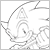
2013/12/02
「ソニック チャンネル」更新！
2013年11月
2013/11/27
「ソニック チャンネル」更新！

2013/11/25
「ソニック チャンネル」更新！
2013/11/21
「ソニック チャンネル」更新！
2013/11/20
「ソニック チャンネル」更新！
2013/11/08
「ソニック チャンネル」更新！
2013/11/05
「ソニック チャンネル」更新！
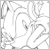
2013/11/01
「ソニック チャンネル」更新！
2013年10月
2013/10/24
「ソニック チャンネル」更新！
2013/10/23
「ソニック チャンネル」更新！
- 「トピックス/イベント情報」2013年11月24日（日）「ソニックファン感謝祭2013」を東京ジョイポリスにて開催決定！！
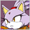
2013/10/18
「ソニック チャンネル」更新！
- 【Wii U版】【ニンテンドー3DS版】の「アクション:カラーパワー」、【Wii U版】「特徴:Miiverse」にカラーパワー紹介動画を追加！
2013/10/16
「ソニック チャンネル」更新！
2013/10/10
「ソニック チャンネル」更新！
- Wii U版/ニンテンドー3DS版『ソニック ロストワールド』無料体験版を配信！
- 【Wii U版】【ニンテンドー3DS版】に「ステージ」を追加！
2013/10/02
「ソニック チャンネル」更新！
- 【Wii U版】【ニンテンドー3DS版】に「アクション」「特徴」を追加！
2013年9月
2013/09/30
「ソニック チャンネル」更新！
- トレイラー「六鬼衆」を公開！
- キャラクター「エッグマン六鬼衆」に紹介動画を追加！
2013/09/25
「ソニック チャンネル」更新！
2013/09/20
「ソニック チャンネル」更新！
2013/09/17
「ソニック チャンネル」更新！
2013/09/13
「ソニック チャンネル」更新！
2013/09/12
「ソニック チャンネル」更新！
2013/09/10
「ソニック チャンネル」更新！
2013/09/09
「ソニック チャンネル」更新！
2013/09/05
「ソニック チャンネル」更新！
2013/09/02
「ソニック チャンネル」更新！
2013年8月
2013/08/23
「ソニック チャンネル」更新！
2013/08/22
「ソニック チャンネル」更新！
2013/08/21
「ソニック チャンネル」更新！

2013/08/08
「ソニック チャンネル」更新！
- 「シュガー・ラッシュ」ブルーレイ発売記念！ソニックチャンネル プレゼントキャンペーンは終了いたしました。たくさんのご応募ありがとうございました。当選者の発表は賞品の発送をもってかえさせていただきます。
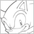
2013/08/01
「ソニック チャンネル」更新！
2013年7月
2013/07/25
「ソニック チャンネル」更新！
2013/07/23
「ソニック チャンネル」更新！
- 「トピックス/イベント情報」「シュガー・ラッシュ」ブルーレイ発売記念！ソニックチャンネル プレゼントキャンペーン
- 『ソニックバースデープレゼントキャンペーン2013』は終了いたしました。たくさんのご応募ありがとうございました。当選者の発表は賞品の発送をもってかえさせていただきます。
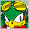
2013/07/19
「ソニック チャンネル」更新！
- 2013年10月24日発売決定！
- トレイラー公開！
「ソニック チャンネル」更新！
- 「トピックス/グッズ情報」「ソニック キャラクターケースセット」＆「ソニック キャラクターイヤホンセット」を2013年10月24日に発売！
2013/07/05
「ソニック チャンネル」更新！
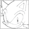
2013/07/01
「ソニック チャンネル」更新！
2013年6月
2013/06/27
「ソニック チャンネル」更新！
2013/06/25
「ソニック チャンネル」更新！
2013/06/21
「ソニック チャンネル」更新！
2013/06/20
「ソニック チャンネル」更新！
- 「ニンテンドー3DS版プロモーションムービー」が公開！
2013/06/07
「ソニック バースデーパーティー2013」応募ページ更新！
2013年5月
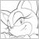
2013/05/31
「ソニック チャンネル」更新！
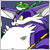
2013/05/20
「ソニック チャンネル」更新！
2013年4月
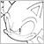
2013/04/26
「ソニック チャンネル」更新！
2013/04/24
「ソニック チャンネル」更新！
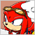
2013/04/19
「ソニック チャンネル」更新！
2013/04/01
「ソニック チャンネル」更新！
2013年3月
2013/03/19
「ソニック チャンネル」更新！
2013/03/15
「ソニック チャンネル」更新！
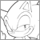
2013/03/01
「ソニック チャンネル」更新！
2013年2月
2013/02/20
「ソニック チャンネル」更新！
2013/02/06
「ソニック チャンネル」更新！
- 「『シュガー・ラッシュ』の特別試写会へご招待プレゼントキャンペーン」は終了致しました。たくさんのご応募ありがとうございました。
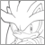
2013/02/01
「ソニック チャンネル」更新！
2013年1月
2013/01/30
「ソニック チャンネル」更新！
- [プレゼントキャンペーン]：ディズニー新作アニメ『シュガー・ラッシュ』の特別試写会へご招待！
2013/01/28
「ソニック チャンネル」更新！
2013/01/18
「ソニック チャンネル」更新！

2013/01/07
「ソニック チャンネル」更新！